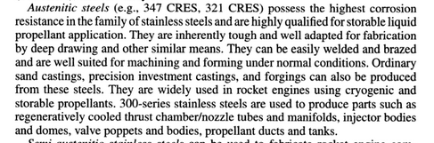

A few things I dug up when reading about the SpaceX Starship, a stainless steel rocket.
Stainless steel is heavier than carbon fiber (the previous material), but it maintains its strength over a much wider temperature range. From Popular Mechanics:
With steel, now you’ve got something where you can comfortably be at a 1500 F interface temperature instead of, say, a 300 F, so you have five times the temperature capability at interface point. What that means is that for a steel structure, the leeward side of the back shell does not need any heat shielding.
A previous stainless steel rocket was an early Atlas rocket1, which used such a thin tank that it needed to be kept pressurized at all times (these are known as balloon tanks). Accidental depressurization would cause a catastrophic failure:
During its maiden voyage in May 1962, a Centaur upper stage rocket, mated to an Atlas booster, exploded 54 seconds after launch, engulfing the rocket in a huge fireball. Investigation revealed that Centaur’s light, stainless-steel tank had split open, spilling its liquid-hydrogen fuel down its sides, where the flame of the rocket exhaust immediately ignited it. Coming less than a year after President Kennedy had made landing human beings on the Moon a national priority, the loss of Centaur was regarded as a serious setback for the National Aeronautics and Space Administration (NASA). During the failure investigation, Homer Newell, Director of Space Sciences, ruefully declared: “Taming liquid hydrogen to the point where expensive operational space missions can be committed to it has turned out to be more difficult than anyone supposed at the outset.”
After this failure, Centaur critics, led by Wernher von Braun, mounted a campaign to cancel the program. In addition to the unknowns associated with liquid hydrogen, he objected to the unusual design of Centaur. Like the Atlas rocket, Centaur depended on pressure to keep its paperthin, stainless-steel shell from collapsing. It was literally inflated with its propellants like a football or balloon and needed no internal structure to give it added strength and stability.
The previous Popular Mechanics article suggests that stainless hasn’t been used in rockets since the Atlas. However, according to Design Methodologies for Space Transportation Systems, it’s a commonly used material:

Not only is stainless steel significantly cheaper2 than carbon fiber, the industry surrounding it is much more developed. From a HN comment on the benefits of stainless steel3:
It’s like the open source software of materials, not only is it cheap but it’s fast because all the info you need is out there in industry.
Steel is just so much more workable every step of the way. You can order your special steel from close to anywhere, your fancy epoxy might have two sources. Any engineer can design for steel and be really good at it (they probably even took classes on it in college) so you can have more cheaper engineers working parallel. Your engineers that know their way around CF are gonna be much more rare and expensive. The tool and die side of things is well known. The little tricks that are tribal knowledge for CF have long been compiled and published into textbooks for steel. If you fat finger a relief radius the die maker is gonna ask you to clarify whereas with some modern material that doesn’t have that body of documentation yet they’ll just assume you know what you’re doing. The material handling side of things is well known, you’ll never have to trash a part of delay a deadline because someone somewhere didn’t store one of your constituent products in the right environment. When you’ve finally built your rocket anyone can test it. The techniques for inspecting steel are well known and widely practiced. For exotic materials you either have to track down experts or build that tribal knowledge internally (expensive and slow).
These little conveniences compound throughout your entire “technology stack” so to speak and a rocket company has a really tall stack.
It’s hard to overstate just how much easier and faster you can work in a known-known like steel vs something that’s new, hot and sexy that everyone wants to treat like a trade secret (as is the case with CF).
The material is apparently regular old AISI 301 stainless steel. By comparison, the typical car might contain a dozen different grades of steel with different properties:
Where once a single grade of steel might have sufficed, the typical “body in white,” as automakers call a car’s basic skeleton, might now be a patchwork of a dozen or more steels of different types and strengths, tailored through computer modeling to handle the stress and strain of normal driving and of severe crashes.
“The day of the mild steel part at the Ford Motor Company is dead,” said Ford’s chief safety engineer, Steve Kozak. “The majority of steels we’re using now are high strength or ultra high strength.”
The advanced steels go by names like D.P. (for dual phase) and TRIP (for transformation-induced plasticity). The strongest ones are used in parts like door beams, where the aim is to stop a foreign object (like another car’s bumper) from entering the passenger compartment, and windshield pillars, where the goal is to prevent the roof from flattening like a pancake in a rollover.
In the front and rear of the vehicle, where there is more room to absorb the energy of a collision, steels that deform more easily, and get stronger as they do, might be used. Even body panels, which are usually made from milder steel, are bake hardenable, getting stronger as they are heated during paint curing to resist denting better.
Another benefit of stainless is it’s ductility. Carbon fiber tends to fracture in low temperatures:
Despite years of testing, concerns still exist about the potential for leaks, due to microcracking of traditional carbon/epoxy composite laminates at cryogenic temper-atures. Microcracks can occur in any laminate because of the difference between the axial and transverse coefficients of thermal expansion (CTE) in each ply, explains Brian Wilson, president of Wilson Composite Technologies (Folsom, Calif.). “Transverse microcracks in the resin can be generated between the fibers as the laminate cools after cure, and as temperature is lowered to cryogenic levels.” Even at moderate pressure, the composite’s exposure to temperature extremes and repeated fill-and-drain cycles causes thermo-mechanical loading, which exacerbates cracking and leads to permeation leak paths, easily traversed by small hydrogen and oxygen molecules. The issue isn’t helped by the fact that most thermoset systems lose strain capacity and become brittle at cryogenic temperatures.